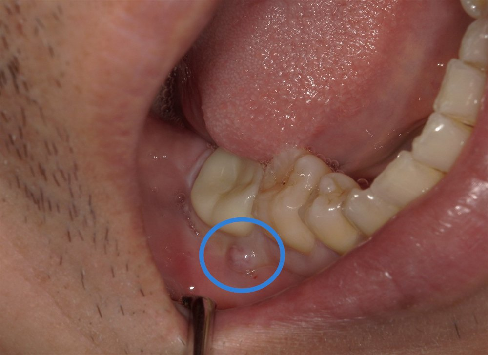
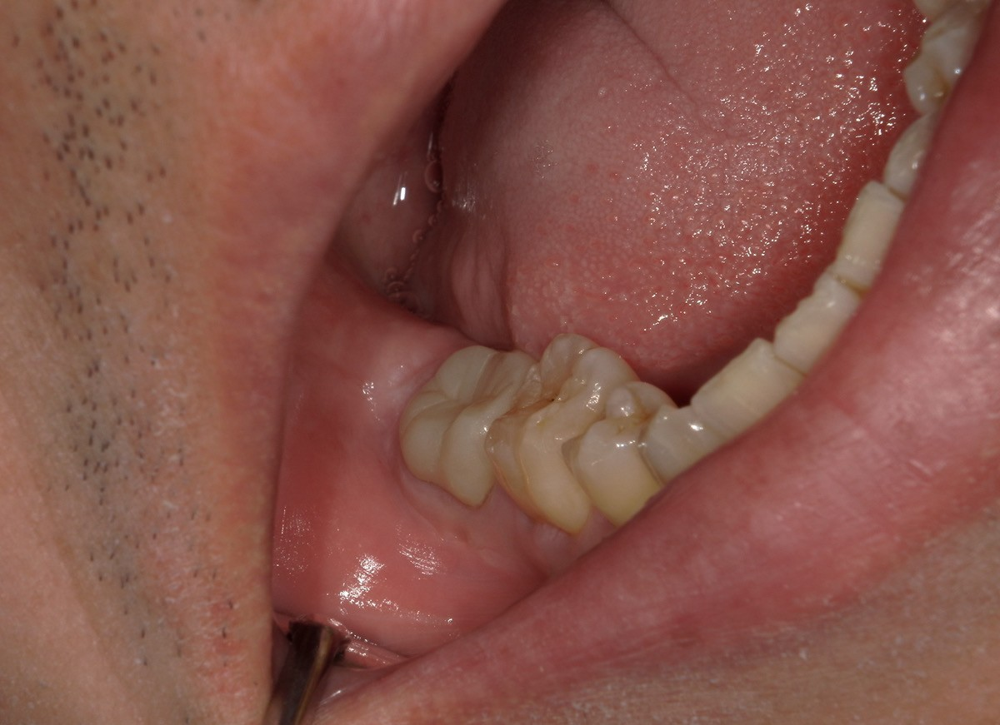
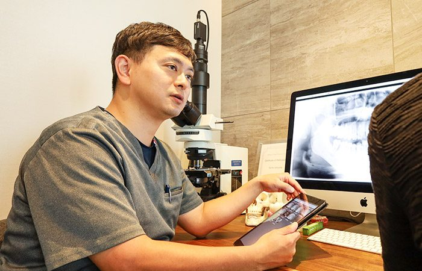

治療前

他院で「抜歯してインプラント」と診断。青い丸の部分に膿の出口。

他院で「抜歯してインプラント」と診断。青い丸の部分に膿の出口。

膿の出口が消え、骨の回復も確認。歯は抜かずに残せています。
※結果は歯の状態により異なります。青い丸は説明用に加えたもので、写真の加工・修整はしていません。
その場で治療を決める必要はありません
どの歯について、どんな説明を受けたか。現在の症状と、これまでの治療の経過もうかがいます。

根の本数と形、膿の広がり、骨の量を立体的に確認。通常のレントゲンで重なる部分も分かります。

最大20倍に拡大し、根のひびや、以前の治療で見つかっていなかった根管がないかを調べます。

「残せる」「条件つきで残せる」「残すのは難しい」のいずれかと、通院回数・費用をお伝えします。
他院で受けた説明は、「右下の歯を抜くと言われた」のように口頭で十分です。レントゲンや診断の資料をお持ちの方は、ご持参ください。
検査の所要時間と費用は、ご予約の際にお伝えします。結果を聞いたうえで、通院中の歯科医院で治療を続ける方もいらっしゃいます。
紹介状は不要
レントゲンがなくても受診可
通院中の医院へは連絡しません
治療の前にご確認ください
ご不明な点は、お電話（078-332-4182）でお問い合わせください。
FAQ
はい、ご相談いただけます。検査だけのご来院でも構いません。結果をお聞きになったうえで、通院中の歯科医院で治療を続ける方もいらっしゃいます。
麻酔をして治療しますので、治療中に強い痛みを感じることはほとんどありません。ただし感じ方には個人差があり、治療後に一時的な痛みや違和感が出ることがあります。
通院は3〜4回が目安で、歯の状態によって変わります。治療の流れは「根管治療の流れ」のページでご説明しています。
当院の精密根管治療は自由診療で、保険は使えません。費用の詳細は「根管治療の費用」のページをご覧ください。
残せない歯に、歯を残す治療を無理にお勧めすることはありません。インプラント・ブリッジ・入れ歯のどれが適しているかをご説明します。インプラントをご希望の方には、提携先の歯科医院をご紹介します。
はい、構いません。別の歯科医院で意見を聞くことは、どなたでも自由にできます。当院から、通院中の歯科医院に連絡することはありません。

JR三ノ宮駅西口から徒歩30秒
検査だけのご来院、セカンドオピニオンとしてのご相談もお受けしています。紹介状は不要で、その場で治療を決める必要はありません。
ご予約の際に「他院で抜歯と言われた歯の相談」とお伝えください。検査の時間を確保します。
月 10:00-15:00／17:00-19:00
火・水・金 10:00-13:30／15:00-19:00
土 9:00-12:30／14:00-18:00
休診：木・日・祝（祝日のある週は木曜も診療）